정보통신기사(구) (2004-05-23 기출문제)
1과목: 디지털 전자회로
1. 그림과 같은 가산 증폭회로의 출력 전압 Vo는 ? (단, Rf=360㏀, R1=120㏀, R2=180㏀, R3=360㏀, V1=-6V, V2=4V, V3=2V임)
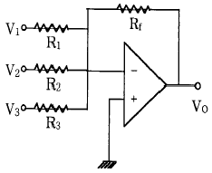
- 4〔V〕
- 8〔V〕
- 10〔V〕
- 12〔V〕
(정답률: 알수없음)

2. 이상적인 연산 증폭기의 특성(조건)으로 틀린 것은?
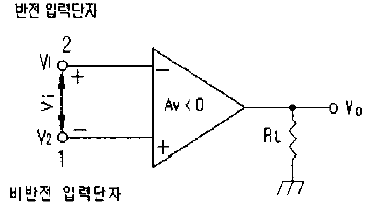
- 입력 임피던스 Ri = ∞
- 출력 임피던스 Ro = 0
- 전압이득 Av = -∞ (개방회로 전압이득)
- 온도에 의한 드리프트 현상이 있음.
(정답률: 알수없음)
3. ECL(Emitter Coupled Logic)회로를 TTL회로와 비교 설명한 것 중 맞는 것은 ?
- 에미터 폴로워이므로 안정된 동작을 한다.
- 스위칭 속도가 빠르다.
- 전력소모가 극히 적다.
- 회로가 간단하지만 공급전압이 높아야 한다.
(정답률: 알수없음)
4. 카운터(counter)를 이용하여 컨베어 벨트를 통과하는 생산품의 갯수를 파악하려고 한다. 최대 500개의 생산품을 카운트하기 위한 카운터를 플립-플롭(flip-flop)을 이용하여 제작할 때 최소한 몇개의 플립-플롭이 필요한가?
- 5
- 7
- 9
- 11
(정답률: 알수없음)
5. 다음 그림의 논리회로와 등가인 회로는?
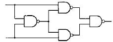
- Half adder
- Full adder
- Exclusive OR
- Exclusive NOR
(정답률: 알수없음)
6. 중심 주파수가 455[KHz]이고 대역폭이 8[KHz]가 되는 단 동조 회로를 만들려고 한다. 이때 이 회로의 Q는 약 얼마가 되는가?
- 2.9
- 5.7
- 29
- 57
(정답률: 알수없음)
7. 대수증폭기의 동작은 무엇에 기인하는가?
- 연산증폭기의 비선형 동작
- pn 접합의 대수 특성
- pn 접합의 역방향 브레이크다운 특성
- RC 회로의 대수적인 충방전
(정답률: 알수없음)
8. 그림과 같은 위인 브릿지 발진회로의 발진주파수를 구하는 식은?
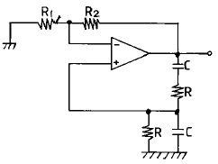
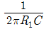
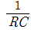
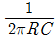
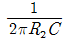
(정답률: 알수없음)
9. 부울 대수식
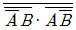
를 간단히 한 결과는?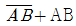
- 1
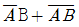
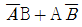
(정답률: 70%)
10. 그림의 캐패시터 입력형 정류회로의 특성을 설명한 것이다. 잘못된 것은?
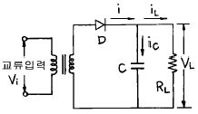
- 캐패시터의 정전용량 C가 클수록 다이오드 D에 전류가 흐르는 시간이 짧아진다.
- 캐패시터의 정전용량 C가 클수록 다이오드 D에 흐르는 전류가 감소한다.
- 캐패시터의 정전용량 C가 클수록 출력 전압의 맥동률은 적어진다.
- 다이오드에 흐르는 전류는 펄스(Pulse)파 형태이다.
(정답률: 알수없음)
11. 그림의 논리회로에서 입력 A=1(high), B=0 (low)일 때 출력 X와 Y의 값은?
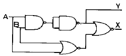
- X=1, Y=1
- X=1, Y=0
- X=0, Y=0
- X=0, Y=1
(정답률: 알수없음)
12. 트랜지스터 B급 증폭회로에서 실효부하저항이 RL'이고 전원전압이 Vcc이면 최대출력(Pomax)은?
- Vcc2/RL'
- Vcc/RL'
- Vcc2/2RL'
- Vcc/2RL'
(정답률: 알수없음)
13. 트랜지스터에서 베이스폭변조(Base width modulation)에 관한 설명으로 가장 적합한 것은?
- 트랜지스터를 제조할 때 베이스 두께를 조정해주는 것을 말한다.
- 트랜지스터의 베이스에 변조전압을 걸어서 동작시키는 것을 말한다.
- 트랜지스터의 접합에 가해지는 바이어스에 의해 베이스 두께가 변하는 것을 이용한 변조를 말한다.
- 트랜지스터의 포장에 의해 베이스가 영향을 받는 것을 말한다.
(정답률: 알수없음)
14. 디지탈 변조(digital modulation)에서 그림과 같은 변조 방식은?
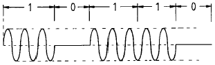
- ASK
- PCM
- PSK
- PNM
(정답률: 알수없음)
15. 다음 중 모든 디지털 시스템을 설계할 수 있는 범용게이트(universal gate)는?
- AND 게이트
- OR 게이트
- NOR 게이트
- Exclusive OR 게이트
(정답률: 알수없음)
16. 다음의 회로는 Ic를 안정하게 하기 위한 회로이다. 무슨 보상방법인가?
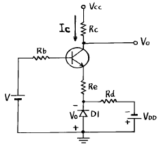
- 전류보상법
- 온도보상법
- 전압보상법
- 궤환보상법
(정답률: 알수없음)
17. 4변수들에 대한 카르노도(Karnaugh map)가 그림과 같이 주어졌을 경우 이를 부울식으로 표현하면?
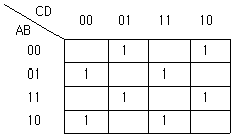
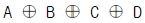
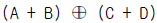
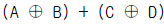
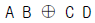
(정답률: 알수없음)
18. 다음 회로에서 트랜지스터의 콜렉터 이미터간 포화전압을 0[V]라 할 때 ① A=B=C=0 인 때와 ② A=B=C=5[V] 일 때의 출력은?
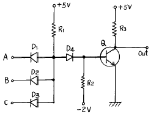
- ①0[V], ②0[V]
- ①0[V], ②5[V]
- ①5[V], ②0[V]
- ①5[V], ②5[V]
(정답률: 알수없음)
19. 슈미트 트리거의 특징으로 옳지 않은 것은?
- 쌍안정 멀티 바이브레이터의 일종이다.
- 입력 전압의 크기가 회로의 포화, 차단 상태를 결정해 준다.
- 구형파와 삼각파 발생에 사용한다.
- 한쪽 트랜지스터의 콜렉터에서 다른쪽 트랜지스터의 베이스로만 결합용 캐퍼시터가 있다.
(정답률: 알수없음)
20. 출력 4[V]를 얻는데 궤환이 없을 때는 0.2[V]의 입력이 필요하고 부궤환이 있을 때는 2[V]의 입력이 필요하다고 한다. 궤환율 β 는 얼마인가?
- 0.25
- 0.30
- 0.40
- 0.45
(정답률: 알수없음)
2과목: 정보통신 시스템
21. 패킷교환망(packet-switched network)에 대하여 설명한 내용 중 틀리는 것은?
- 패킷교환망을 통과한 패킷들의 순서는 전송한 순서와 다를 수도 있다.
- 데이타그램 서비스에서는 패킷에 목적지의 주소가 포함되며 이들 패킷들은 독립적으로 다루어진다.
- 호(call)가 한번 성립되면 호가 지속되는 동안 두 터미날간에 전용회선이 계속 유지된다.
- 장애발생시 대체 경로 선택기능이 있다.
(정답률: 알수없음)
22. HDLC 프로토콜의 설명으로 적합하지 않은 것은?
- 물리계층의 정보전송을 위한 아키텍쳐이다.
- bit 방식의 프로토콜이다.
- 고속데이타 전송에 적합하다.
- Full duplex 방식에서 사용할 수 있다.
(정답률: 알수없음)
23. No.7 신호방식의 특징이 아닌 것은?
- 공통선 신호방식이다.
- 기능별로 모듈화된 계층구조이다.
- 다양한 서비스 제공능력을 가진다.
- 패킷교환망에 가장 적합한 신호방식이다.
(정답률: 알수없음)
24. 다음 중 정보통신 발전 과정에 대한 설명으로 옳지 않은 것은?
- 세계 최초의 데이터 통신 시스템은 미군용 방공시스템인 SABRE이다.
- 세계 최초의 패킷 교환망은 ARPANET 망이다.
- 디지털 기술에 의하여 음성, 화상, 데이터 등의 서비스를 종합적으로 제공하는 통신망은 ISDN이다.
- 무선 패킷 교환망의 시초는 ALOHA 시스템이다.
(정답률: 알수없음)
25. 전송로의 시험중 나타나는 백색잡음(White noise)이란 무엇인가?
- 가우스 잡음으로 제한된 대역폭을 갖는 잡음
- 임펄스성 잡음으로 제한된 대역폭을 갖는 잡음
- 백색을 나타내는 주파수대로 이루어진 잡음
- 모든 주파수에 걸쳐서 포함된 잡음
(정답률: 알수없음)
26. 다음 중 ITU-T의 DTE/DCE 인터페이스에 관한 규정으로 전화와 음성 대역의 아날로그 전화 회선용으로 권고한 시리즈는?
- X 시리즈
- V 시리즈
- I 시리즈
- T 시리즈
(정답률: 알수없음)
27. 다음 중 근거리 네트워크(Local Area Network)의 일반적인 전송 방식에 속한다고 할 수 없는 것은?
- Token Bus
- CSMA/CD
- Token Ring
- SDLC
(정답률: 알수없음)
28. 다음 중 전송회선의 잡음으로 부터 가장 많은 영향을 받는 변조 방식은?
- 진폭변조(AM)
- 주파수변조(FSK)
- 위상변조(PSK)
- 펄스부호변조(PCM)
(정답률: 알수없음)
29. 정보량의 측정단위로써 불규칙성, 예측불가능의 측정단위로 이용되는 것은?
- 펄스(pulse)
- 스펙트럼(spectrum)
- 엔트로피(entropy)
- 도트(dot)
(정답률: 알수없음)
30. 전기통신망에서 정보를 교환하는 방식이 아닌 것은?
- 회선교환(circuit switching)
- 패킷교환(packet switching)
- 메세지교환(message switching)
- 망교환(network switching)
(정답률: 알수없음)
31. 동축케이블을 이용하는 베이스밴드(baseband)방식 뿐만아 니라 꼬임선(twisted pair)을 이용한 10Base-T 방식은?
- FDDI
- Ethernet(CSMA/CD)
- MAP
- Token ring
(정답률: 알수없음)
32. PCM-24 반송전화 방식에 있어서 원 신호 파형의 주파수가 4[㎑]이고, 표본화 주파수가 8[㎑]일때의 1주기당 PAM 신호는 몇개가 되는가?
- 5개
- 4개
- 3개
- 2개
(정답률: 알수없음)
33. SDLC(Synchronous data link control) 프로토콜의 특성이 아닌 것은?
- 비트방식의 프로토콜이다.
- 네크워크 구조에 무관하게 운영된다.
- IBM 네트워크에서 주로 사용하는 프로토콜이다.
- 반이중방식만 가능하다.
(정답률: 알수없음)
34. 패킷교환방식에서 트래픽제어 기법의 요소가 아닌 것은
- flow control
- congestion control
- deadlock avoidance
- error control
(정답률: 알수없음)
35. 통신시스템에서 송신되는 정보의 보안을 위하여 정보를 분산 시키는 방법중에 해당되지 않는 것은?
- Direct Sequence Spread Spectrum
- Frequency Hopping
- Time Hopping
- Frequency Multiplexing
(정답률: 알수없음)
36. 두 대의 CPU에 똑같은 내용의 업무를 처리하게 한후 양자의 처리결과를 비교하여 일치할 경우에만 다음 업무를 수행토록 하는 시스템 구성방식은?
- Duplex 방식
- Dual 방식
- Separate 방식
- Multi Processsing 방식
(정답률: 알수없음)
37. 표준으로 잘 사용하고 프로그램의 중심부분을 코딩한 것으로 입출력 동작은 고려하지 않고 시스템의 하드웨어 성능을 평가하는데 주로 사용하는 시험 프로그램은?
- Kernel 프로그램
- Synthetic 프로그램
- Bench mark 프로그램
- Diagnostic 프로그램
(정답률: 알수없음)
38. ITU-T에서 권고한 ISDN 가입자의 기본 채널구조인 2B+D 접속에서 전송정보량은 얼마인가?
- 80[kbps]
- 128[kbps]
- 144[kbps]
- 256[kbps]
(정답률: 알수없음)
39. ISDN의 특징이 아닌 것은?
- 음성, 데이터, 화상정보를 하나의 통신망을 이용하여 전송할 수 있다.
- 제공되는 서비스가 매우 다양하다.
- 패킷교환이 사용되지 않는다.
- 전송과 교환의 개념이 통합된다.
(정답률: 알수없음)
40. 에러제어방식중 ARQ(Automatic Repeat Request)방식은 어떤 방식인가?
- 패리티검사 코드방식
- 에러검출후 재전송방식
- 전진에러 수정방식
- 루프 혹은 에코검사방식
(정답률: 알수없음)
3과목: 정보통신 기기
41. 다음 중 저궤도 위성통신 시스템이 아닌 것은?
- IRIDIUM
- GLOBAL - STAR
- INMARSAT
- PROJECT - 21
(정답률: 알수없음)
42. 교환기와 교환기간의 디지털 국간 중계 정합장치의 인터페이스 기능인 것은?
- GAZPACHO
- GBZSCTO
- BORSCHT
- BOZAPCHO
(정답률: 알수없음)
43. MHS(Message Handling System)의 특징으로 볼 수 없는 것은?
- 국제적으로 표준화된 전자 메일 통신 방식
- 풍부한 네트워크 통신 처리 기능
- 데이터의 투과성
- 장소 및 장비가 제한적이나 재배치성이 우수
(정답률: 알수없음)
44. 비디오텍스(videotex)의 구성요소가 아닌 것은?
- 원격 감시장치
- 정보 축적장치
- 사용자 단말장치
- 전화 통신망
(정답률: 알수없음)
45. 교환기의 공통제어 방식의 특징으로서 가장 큰 단점은?
- 축적변환기능
- 저손실 중계
- 번호계획과 교환회로망 구성의 독립성
- 장애발생시 영향이 큼
(정답률: 알수없음)
46. 다음 광 통신에 대한 설명이 아닌 것은?
- 무게가 가볍다.
- 전송 대역폭이 작다.
- 고속 전송이 가능하다.
- 전자적 유도현상이 없다.
(정답률: 알수없음)
47. 통신제어 장치의 통신접속 기능으로서 분기회선에서 복수 개의 단말이 1개의 통신회선을 공유하는 경우에 복수의 논리적인 통신회선을 설정하는 기능은?
- 통신방식제어
- 제어정보의 식별
- 다중접속제어
- 흐름 및 우선권 제어
(정답률: 알수없음)
48. 세계위성통신을 행하기 위해서 제안된 세 가지 통신위성 방식이 아닌 것은?
- 이동위성방식
- 정지위성방식
- 위상위성방식
- Random위성방식
(정답률: 알수없음)
49. 이동통신에서 한 셀(cell)의 모든 채널이 혼잡상황일 때 이웃 셀에서 가용채널을 찾는 알고리즘은?
- 동적 채널 할당
- 차용 채널 할당
- 혼합 채널 할당
- 고정 채널 할당
(정답률: 알수없음)
50. 정보통신 시스템에서 정보전송 장치에 속하지 않는 것은?
- 단말장치
- 전송회선
- 중앙처리장치
- 통신제어장치
(정답률: 알수없음)
51. 뉴 미디어의 특징에 관한 설명과 거리가 먼 것은?
- 기존 미디어가 발전 융합된 것이 많다.
- 대화형 정보 전달로 상호 작용성이 있다.
- 통신 기술의 발전으로 가능하게 되었다.
- 단방향 통신기능 부여로 정보접근이 용이하다.
(정답률: 알수없음)
52. 정지위성과 지구국 사이의 전파지연 시간은 약 얼마인가?
- 0.10 - 0.20초
- 0.20 - 0.35초
- 0.35 - 0.50초
- 0.50 - 0.65초
(정답률: 알수없음)
53. 가입자가 요청하는 호를 접속하기 위하여 필요한 정보를 전화기와 교환기 또는 교환기 상호간에 주고 받는 과정을 나타내는 방식은?
- 중계방식
- 교환방식
- 신호방식
- 서비스방식
(정답률: 알수없음)
54. 모뎀의 송신부 중 데이터 패턴을 랜덤하게 하여 수신측에서 동기를 잃지 않도록 하며, 신호의 스펙트럼이 채널의 대역폭 내에 가능한 넓게 분포하도록 하여 수신 측에서 등화기가 최적의 상태를 유지하도록 하는 기능을 하는 것은?
- 변조기
- 데이터 부호화기
- 스크램블러
- 증폭기
(정답률: 알수없음)
55. 컴퓨터와 주변장치사이에 데이터전송을 할때 입출력의 준비나 완료를 나타내는 신호를 사용하여 데이터입출력을 하는 방식은?
- 폴링방식
- 인터럽트방식
- 핸드쉐이킹 방식
- 핸드온 방식
(정답률: 알수없음)
56. 다음 중 CATV의 기본 구성 요소가 아닌 것은?
- 헤드앤드
- 중계 전송망
- 가입자 단말
- 교환장치
(정답률: 알수없음)
57. 디지틀 교환기의 TS(time Switch)의 구성으로 적합하지 않은 것은?
- 통화메모리
- 제어메모리
- 계수기
- 디코더
(정답률: 알수없음)
58. 두 선으로 연결된 통신선로 상에 1~2M bps 하향 데이터와 16kbps의 하향 통신을 하도록 지원하는 ADSL(비대칭 디지털 가입자선) 단말기에서 상향 데이터와 하향 데이터를 구분해주는 단말기 구성부는?
- 반향 제거기
- 시분할 분석기
- 파장 다중화기
- 코드 분할 다중화기
(정답률: 알수없음)
59. 포트 공동이용기에 대한 설명 중 옳지 않은 것은?
- 호스트 컴퓨터와 모뎀사이에 설치되어 여러 대의 터미널이 하나의 공동포트를 이용한다.
- 경쟁선택 네트워크에서 이용된다.
- 폴/셀렉터 프로토콜을 이용한다.
- 컴퓨터 설치장소와 무관하게 터미널을 이용할 수 있다.
(정답률: 알수없음)
60. 라우터(Router)의 설명으로 가장 옳은 것은?
- 근거리통신망 내에서 세그먼트들을 서로 연결하는데 사용되며, 또한 유무선 광역통신망 전송을 증폭하고 연장하는 데에도 사용된다.
- 어떤 통신망 내에서의 트래픽 흐름의 경로를 결정하여 메시지 전달을 신속히 처리하기 위한 장치이다.
- 디지털 신호를 아날로그 전송 회선의 전송에 적합하도록 변조하여 통신 회선을 통해 전송하며 수신측에서는 이의 역과정을 통해서 원래의 신호로 복원하는 것이다.
- 통신망에 과다하게 연결된 컴퓨터들로 인한 병목현상을 줄이고자 할 때, 서로 다른 물리적 매체로 구성된 통신망을 연결할 때 사용한다.
(정답률: 알수없음)
4과목: 정보전송 공학
61. 다음중 다중화기법으로 사용되지 않는 것은?
- 주파수 분할(Frequency Division)
- 시간 분할(Time Division)
- 코드 분할(Code Division)
- 전류 분할(Current Division)
(정답률: 알수없음)
62. 변조의 개념을 가장 잘 설명한 것은?
- 전송신호를 고주파신호 성분과 저주파신호 성분으로 분리하는 것이다.
- 수신신호로부터 반송파를 제거하는 것이다.
- 아날로그신호를 디지털신호로 변환하는 것이다.
- 채널을 통해 효율적으로 전송되도록 송신신호를 변환하는 것이다.
(정답률: 알수없음)
63. 다음중 동기식 전송방식과 거리가 먼 것은?
- 데이터 프레임 앞에 동기문자가 있다.
- 각 문자사이에 휴지시간이 필요하다.
- 고속의 전송에 알맞다.
- 전송양단에 버퍼 메모리가 필요하다.
(정답률: 알수없음)
64. 비트오류율(BER)에 대하여 바르게 기술된 것은?
- 데이터율의 증가는 BER을 감소시킨다.
- 신호대 잡음비의 증가는 BER을 증가시킨다.
- 대역폭의 증가는 같은 BER을 유지하면서 데이터율을 증가 시킨다.
- 엔코딩 형식에 관계없이 BER은 일정하다.
(정답률: 알수없음)
65. BSC(binary syncronous communication)방식에 대한 설명으로 옳지 않은 것은?
- 비트 전송을 기본으로 하는 전송 제어 프로토콜이다.
- IBM이 최초로 제안하여 채택된 프로토콜이다.
- OSI 7계층 중 계층 2인 데이타 링크 계층에 관한 프로토콜이다.
- 반이중 전송 방식을 지원하는 프로토콜이다.
(정답률: 알수없음)
66. 디지탈 입력 신호 펄스열을 그대로 또는 다른 형태의 펄스 파형으로 변환하여 전송하는 방식은?
- 광대역(broad band) 전송 방식
- QAM 방식
- 반송대역 전송 방식
- 베이스 밴드 전송 방식
(정답률: 알수없음)
67. 컴팬딩(Companding)을 수행하는 목적에 해당되지 않는 것은?
- 선형 양자화를 하면서도 비선형 양자화의 효과를 얻기 위하여
- 양자화 계단의 크기가 시간에 따라 변화 되도록하기 위해서
- 양자화시 사용하는 비트수를 증가시키지 않으면서도 신호대 양자화 잡음비를 향상 시키기 위해서
- 작은 PAM신호 및 큰 PAM신호 모두에 대해 일정한 신호대 양자화 잡음비를 얻기 위해서
(정답률: 알수없음)
68. 변조속도가 1200[Baud]일때 4상식 위상변조를 하면 데이타 신호속도는?
- 1200[b/s]
- 2400[b/s]
- 4800[b/s]
- 9600[b/s]
(정답률: 알수없음)
69. 디지탈 마이크로파 통신에서 페이딩현상에 대처하기 위한 것은?
- 엠파시스
- 스크램블
- DSI
- 다이버시티
(정답률: 알수없음)
70. 비동기 전송에서 시작과 정지비트가 각각 1비트, 문자비트가 8비트가 사용되고 있는 9600(bps) 전송속도의 통신구간에서 실제 유효속도는 얼마인가? (단, 패리티비트는 없다)
- 9600
- 7680
- 4800
- 3840
(정답률: 알수없음)
71. HDLC 프로토콜에서 복합국끼리 상대방의 허가 없이 명령이나 응답을 전송할 수 있는 동작 모드는?
- 정규 응답 모드
- 폴링 모드
- 비동기 평형 모드
- 비동기 응답 모드
(정답률: 알수없음)
72. 광섬유를 융착접속을 이용하여 영구접속을 하고자 할 때 작업순서에 알맞은 것은?
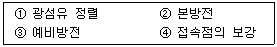
- ① - ② - ③ - ④
- ① - ④ - ③ - ②
- ① - ③ - ② - ④
- ③ - ④ - ② - ①
(정답률: 알수없음)
73. 광케이블이 단일모드 광케이블인지 다중모드 광케이블인지 구분하는데 사용하는 광학 파라메타(parameter)는?
- 수광각
- 개구수(NA)
- 비굴절률차
- 규격화 주파수
(정답률: 알수없음)
74. 전송선로의 무왜조건이 되기 위해서 1차 정수 R,C,L,G의 관계식은?
- RL = 2CG
- RC = LG
- RG = LC
- RG = 2LC
(정답률: 알수없음)
75. 다음중 0 연속 (0이 연속되는것)을 억압하기 위해 사용되는 전송부호는?
- 바이폴라(bipolar)
- 맨체스터(Manchester)
- CMI
- BNZS
(정답률: 알수없음)
76. 기수 패리티를 가진 해밍코드의 수신된 결과가 다음과 같을 때, 착오(error)를 수정한 후의 코드는?
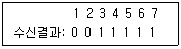
- 1011111
- 0010111
- 0011101
- 0011110
(정답률: 알수없음)
77. 데이터통신과 전화통화를 대응시켜 설명한 것 중 가장 관계가 적은 것은?
- 회선의 접속 : 수화기를 들고 다이얼을 돌린다.
- 데이터 링크의 확립 : 상대를 확인한다.
- 정보의 전송 : 용건을 전달한다.
- 데이터 링크의 해제 : 수화기를 놓는다.
(정답률: 알수없음)
78. 데이타 전송을 위한 코드구성시 모든 코드가 일정한 수의 1과 0을 갖도록하여 자체적인 오류(error)검사가 이루어지는 방식은?
- 패리티검사방식
- 일정마크 스페이스 방식
- 그룹계수검사방식
- 순환중복검사방식
(정답률: 알수없음)
79. 다음 전송선로 중 대역폭이 가장 넓은 것은?
- 가공나선
- 평형대 케이블
- 동축케이블
- 광케이블
(정답률: 알수없음)
80. HDLC 프로토콜의 설명 중 맞은 것은?
- 전이중 방식만 사용이 가능하다
- 바이트 방식 프로토콜이다
- 문자방식 프로토콜이다.
- 데이터 링크계층의 정보전송을 위한 아키텍쳐이다
(정답률: 알수없음)
5과목: 전자계산기일반 및 정보통신설비기준
81. 다음 주소 지정 방식 중 기억 장치를 가장 많이 엑세스(access)해야 하는 방식은?
- 직접 주소 지정 방식
- 상대 주소 지정 방식
- 간접 주소 지정 방식
- 인덱스 주소 지정 방식
(정답률: 알수없음)
82. C언어의 특징을 잘못 설명한 것은?
- C언어 자체에는 입출력 기능이 없다.
- C는 포인터와 주소를 계산할 수 있다.
- 연산자가 풍부하지 못하다.
- 데이터에는 반드시 형(type) 선언을 해야 한다.
(정답률: 알수없음)
83. 중앙 연산 처리 장치의 하드웨어(hardwere)적 요소가 아닌 것은?
- IR(Instruction Register)
- MAR(Memory Address Register)
- LAN(Local Area Network)
- PC(Program Counter)
(정답률: 알수없음)
84. 다음 중 정보통신공사업자가 아닌 자가 시공할 수 있는 경미한 공사에 해당하는 것은?
- 간이 무선국의 설비공사
- 구내방송 송수신시설의 설비공사
- 전기통신시설물의 전기부식방지의 설비공사
- 통신설비를 이용한 중앙집중제어장치의 설비공사
(정답률: 알수없음)
85. 전기통신설비기술기준에서 정의하는 강전류전선은 몇[V] 이상의 전력을 송전하거나 배전하는 전선을 말하는가?
- 220[V]
- 300[V]
- 500[V]
- 3300[V]
(정답률: 알수없음)
86. 다음 보기와 같이 3가지의 연산자가 있다. 연산순서가 빠른 것부터 순서적으로 옳게 나열한 것은?
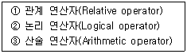
- ① → ② → ③
- ① → ③ → ②
- ③ → ② → ①
- ③ → ① → ②
(정답률: 알수없음)
87. 전기통신설비의 기술기준에서 고주파수란 얼마의 주파수를 말하는가?
- 1[MHz] 이상의 주파수
- 5000[Hz] 이상의 주파수
- 3400[Hz]를 초과하는 주파수
- 300[Hz] 미만의 주파수
(정답률: 50%)
88. 정보통신부장관은 전기통신용품에 대하여 그 생산과정 또는 다른 측면에서 이를 기술지도 할 수 있는 권한과 책임이 있다. 다음 중 기술지도와 관계가 없는 것은?
- 기술용역의 제공
- 기술의 훈련
- 기술정보의 제공
- 해외기술협력의 지원
(정답률: 알수없음)
89. 산술 및 논리연산의 결과를 일시 보존하는 레지스터는?
- Accumulator
- Storage 레지스터
- Arithmetic 레지스터
- Instruction 레지스터
(정답률: 알수없음)
90. 통신위원회의 위원장은 누가되는가?
- 국무총리
- 정보통신부차관
- 한국통신사장
- 대통령이 임명하는 자
(정답률: 60%)
91. 기간통신사업자가 전기통신설비의 설치.보전을 위한 측량.조사 등을 위하여 타인의 토지 또는 주택구내에 출입하고자 하는 경우의 규정으로 틀리는 것은?
- 주거용 건물인 경우 거주자의 승낙을 얻어야 한다.
- 출입시 신분증표를 관계인에게 제시하여야 한다.
- 미리 통고만 했으면 승낙여부는 무관하다.
- 정당한 사유없이 출입을 거부.방해한 자는 벌칙에 처할 수 있다.
(정답률: 알수없음)
92. 캐시 메모리의 적중률은 프로그램과 데이터의 지역성에 크게 의존하는데, 지역성의 특성이 아닌 것은?
- 시간적 지역성
- 공간적 지역성
- 순차적 지역성
- 비순차적 지역성
(정답률: 알수없음)
93. 다음 중 정보통신공사업을 영위할 수 있는 자는?
- 한국정보통신공사협회에 등록한 자
- 건설교통부장관의 허가를 받은 자
- 정보통신부장관에게 등록한 자
- 한국전기통신공사가 공시한 자
(정답률: 알수없음)
94. 8진수 277.24를 10진수로 변환하면 어느 것인가?
- 191.3125
- 191.25
- 292.3125
- 292.0625
(정답률: 알수없음)
95. “단말장치”의 정의로 가장 적합한 것은?
- 전기통신망에 접속된 단말기기 및 그 부속설비를 말한다.
- 통신회선에 접속하는 전신교환기, 전화교환기, 변복조기 등을 말한다.
- 전기통신설비와 접속하여 이용하고자 이용자가 설치하는 짹, 플럭, 버튼 등을 말한다.
- 정보통신에 이용하는 정보통신기기의 본체와 이에 부수되는 입출력장치와 기타의 기기 등을 말한다.
(정답률: 알수없음)
96. 다음 중 언어를 번역하는 번역기가 아닌 것은?
- Assembler
- Interpreter
- Compiler
- Linkage Editor
(정답률: 알수없음)
97. 정보통신망사업을 영위함에 있어서 통신망사업자 및 그 종사자가 하여서는 아니되는 행위가 있다. 다음 중 이에 해당되지 않는 것은?
- 국가의 안전을 위태롭게 하는 행위
- 공공의 미풍양속을 해치는 행위
- 국가경제발전에 위태로운 행위
- 통신망의 과도한 이용을 방지하는 행위
(정답률: 알수없음)
98. 중앙처리 장치를 하나의 칩으로 집적해서 만들고 메모리와 입출력 장치를 접속시킨 것은?
- 전원회로
- 마이크로컴퓨터
- 터미널
- 데이터 시스템
(정답률: 알수없음)
99. 언팩 10진법 형식에 의한 값이 "F1F4F7F5"이다. 이 값을 16진수로 변환하면?
- 5C3
- 5D2
- 4C3
- 4D2
(정답률: 알수없음)
100. 정보통신부장관이 전기통신의 표준화에 관한 업무를 효율적으로 추진하기 위하여 두는 기구는?
- 통신위원회
- 한국전기통신공사 품질보증단
- 한국정보통신기술협회
- 형식승인심의회
(정답률: 알수없음)
Vo = -(Rf/R1)V1 + (Rf/R2)V2 + (Rf/R3)V3
여기에 주어진 값들을 대입하면,
Vo = -(360/120)(-6) + (360/180)(4) + (360/360)(2) = 8〔V〕
따라서 정답은 "8〔V〕"이다.